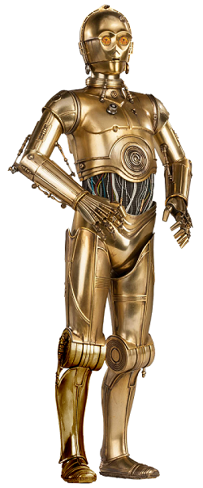
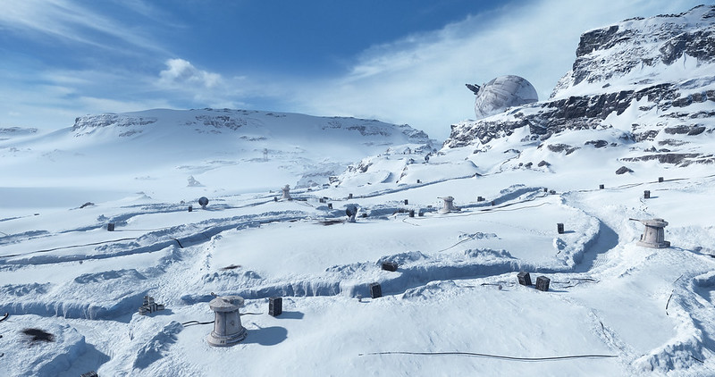

main content goes below
Did You Know?
C-3PO is fluent in over six million different languages!!!
Source : https://www.nme.com/blogs/the-movies-blog/star-wars-facts-2077554
Featured Star Wars Movie Reviews
Planet of the Day
Planet Hoth was the site of the Rebel Alliance's Echo Base. It is a world of snow and ice and home to deadly creatures like the wampa.
Source : https://www.starwars.com/databank/hoth
Character of the Day
Darth Vader is the central character in the Star Wars franchise. He is the Chosen One, a Jedi legend who brings balance to the Force. Vader was born as Anakin Skywalker on Tatooine and the Prequel Trilogy cover his journey from slavery to becoming a Jedi and his eventual fall to the Dark Side. Along the way, he earns a great name for himself by saving the Galactic Republic more than a few times and creates close relationships with other major characters in the series like his Jedi Master, Obi-Wan Kenobi and his love interest, Padme Amidala. The prequels end with Anakin turning his back on the Jedi and swearing his allegiance to the Emperor. The Original Star Wars Trilogy takes place 19 years after the destruction of the Jedi Order and focuses more on his son, Luke Skywalker's story. Vader is portrayed as an antagonistic character and tries to turn his son towards the dark side as well. But the tables are turned when Luke manages to find some good in his father. With his help, Anakin Skywalker redeems himself and defeats the Emperor aboard the fully operational Death Star. Sadly, Anakin suffered heavy damage to his suit during the encounter and dies in his son's arms on the Death Star, shortly before it explodes.
Source : https://www.giantbomb.com/darth-vader/3005-308/